🍜 餐廳
第一牧志公設市場・二樓食堂街 ✅


代客料理海鮮
特色：1樓挑龍蝦、夜光貝、石垣牛請2F代煮。體驗＋午餐一次解決。
必點：1F現挑伊勢龍蝦做刺身＋夜光貝奶油燒＋石垣牛鹽燒，跟2F說要「半刺身半燒烤」。
花費：每人約¥2,000–3,500｜時間：11:00–20:00左右（週三部分店休⚠️）｜交通：單軌牧志站步行約5分
🗺 地圖暖暮拉麵 那霸牧志店 ✅


豚骨拉麵排隊名店
特色：福岡系細麵豚骨，可選麵硬度＋辣度，市場人太多時的午餐備案。
必點：經典豚骨＋半熟蛋＋煎餃，麵選硬、蔥多加，怕膩點小辣烈火。
花費：¥1,000–1,300/人｜時間：約11:00–24:00，午間排隊20–40分
🗺 地圖通堂拉麵 小祿本店 ✅


男人麵／女人麵在地人氣
特色：「おんな味」清爽鹽味 vs「おとこ味」濃厚蒜香背脂，DFS順路，B計畫午餐首選。
必點：第一次點おんな味（鹽味清爽），敢吃蒜再戰おとこ味＋煎餃。
花費：¥900–1,200/人｜交通：單軌小祿站步行約8分
🗺 地圖豬肉蛋飯糰 牧志市場本店 ✅

外帶點心排隊
特色：午餐肉＋玉子＋高菜／蝦仁現做，邊走邊吃或帶回船，國際通分店可分散人潮。
必點：蝦仁＋油味噌口味最搶手，現做趁熱吃，冷掉口感差一半。
花費：¥400–700/個｜時間：07:00–19:00左右，午前排隊最長
🗺 地圖泊いゆまち（泊港魚市場）✅


海鮮丼在地市場
特色：比公設市場更在地價格更親，現切本鮪＋近海魚丼，碼頭計程車約10分，適合早到先吃。
必點：本鮪中腹丼＋當日近海魚刺身拼盤，早上去魚料最齊。
花費：海鮮丼¥1,000–2,000｜時間：約09:00–18:00（早去魚料最齊）
🗺 地圖傑克牛排館 Jack's Steak House ✅


老字號牛排美式復古
特色：1953年創業，鐵板紐約客＋玉米濃湯＋A1醬汁，午間套餐划算。離碼頭車程約10分。
必點：紐約客牛排＋玉米濃湯＋A1醬汁，午間套餐最划算。
花費：午餐¥1,500–2,500／晚餐¥3,000–5,000｜時間：11:00–22:00左右⚠️
🗺 地圖花笠食堂 ✅


沖繩定食高CP
特色：雞肉飯（ジューシー）、麵線炒、苦瓜炒，市場旁老食堂，翻桌快價格親，怕排隊者的避難所。
必點：雞肉飯（ジューシー）＋麵線炒＋苦瓜炒，一餐全包。
花費：¥700–1,200/人｜交通：牧志站步行約5分
🗺 地圖Blue Seal 國際通店 ✅


甜點沖繩限定口味
特色：紅芋、鹽金楚糕、琉球紅茶口味必試，下午茶或飯後一球。
必點：紅芋＋鹽金楚糕雙球，先問期間限定口味。
花費：單球¥400–500｜交通：國際通上，県庁前站步行約5分
🗺 地圖琉球の牛 国際通店 ✅


和牛燒肉午間套餐
特色：縣產和牛＋石垣牛吃到飽／套餐名店，國際通店交通最方便。午間套餐比晚餐划算，建議先訂位⚠️。
必點：午間和牛拼盤＋石垣牛特選，晚餐改吃到飽不如午間套餐划算。
花費：午餐¥2,500–4,000／晚餐¥5,000–8,000｜交通：牧志站步行約5分
🗺 地圖鄉土料理 田舎（inaka）✅


鄉土定食在地客多
特色：拉フテー（燉五花）、ちゃんぷるー定食、山羊汁（挑戰者限定⚠️），久茂地老店，觀光客少。
必點：拉フテー定食＋苦瓜炒，山羊汁留給勇者，配泡盛一杯。
花費：¥1,000–2,000/人｜交通：県庁前站步行約7分
🗺 地圖88牛排 辻本店 ✅


美式牛排份量大
特色：美軍最愛的德州風牛排，T骨＋玉米＋大蒜奶油，辻本店離碼頭近（車程約8分），早午餐時段人較少。
必點：T骨＋大蒜奶油玉米＋馬鈴薯，醬料另要一份。
花費：¥2,000–4,000/人｜時間：11:00–24:00左右⚠️
🗺 地圖📷 景點
波上宮＋波之上海灘 ✅


介紹：琉球八社之首，海崖神社＋市區唯一沙灘。御朱印所09:00起。冬季不開放游泳，純散步。
停留：約1.5小時｜費用：免費（御朱印¥500）｜交通：碼頭計程車約10分
🗺 地圖首里城（重建中 ⚠️）


介紹：世界遺產，正殿預計2026年秋完成——12月有望見到新正殿⚠️（出發前查官方公告）。單軌＋步行單程40–60分，時間緊者斟酌。
費用：城郭內免費，有料區約¥400｜停留：約2小時｜交通：單軌首里站步行約15分
🗺 地圖第一牧志公設市場 ✅


介紹：「沖繩人的廚房」，2023年新大樓，有冷氣電梯。1F生鮮＋2F食堂。
停留：約1–2小時｜交通：牧志站步行約5分
🗺 地圖國際通 ✅

介紹：全長1.6公里「奇蹟的一英里」，伴手禮藥妝餐廳全線覆蓋。週日部分時段步行者天國⚠️。
停留：約2–3小時｜交通：県庁前／美栄橋／牧志三站皆可進出
🗺 地圖沖繩縣立博物館・美術館 ✅

介紹：琉球王國歷史＋自然史＋現代美術，有中文簡介，B計畫（雨天）核心站，常設展1.5小時可走完。
費用：常設展約¥400–800｜時間：09:00–18:00，週一休⚠️｜交通：おもろまち站步行約10分
🗺 地圖瀨長島 Umikaji Terrace ✅

介紹：機場旁小希臘風白色階梯商場＋足湯＋海景＋飛機起降。車程單程20–30分，捨棄國際通者二選一。
費用：免費入場｜停留：約1.5小時（含車程至少2.5小時）
🗺 地圖DMMかりゆし水族館 ✅

介紹：2020年開幕的新型水族館，企鵝海獺＋觸摸池＋光影水母區，全室內雨天完美備案，親子大推。可與瀨長島順遊（車程10分）。
費用：約¥2,400–2,800⚠️｜停留：約2小時｜交通：那霸車程約25分（包車／巴士）
🗺 地圖那霸市歷史博物館 ✅

介紹：パレットくもじ4樓，國寶「万国津梁の鐘」等琉球王國文物，門票¥350、1小時看完，雨天＋歷史控的隱藏好選擇。
費用：¥350｜停留：約1小時｜交通：県庁前站直結
🗺 地圖福州園＋孔子廟（久米）✅

介紹：那霸—福州友好紀念中式庭園，門票便宜人少清幽，波上宮順路（車程5分）可加碼30分鐘快閃。
費用：約¥200｜時間：09:00–18:00左右⚠️
🗺 地圖🏬 百貨公司（含主要店面）
りうぼう（Ryubo）・國際通 ✅

國際通老字號百貨，B1食品＋沖繩物產最齊，退稅方便。
- B1：食品賣場、沖繩物產、便當熟食
- 1F：化妝品、沖繩特產、服務台（退稅）
- 2–5F：男女服飾、生活雜貨、餐廳街
- 6F：餐廳街（沖繩料理、和食）
時間：約10:00–20:30｜交通：県庁前站直結
🗺 地圖T廣場 DFS沖繩（おもろまち）✅

日本唯一的市區免稅店（需護照＋出境船票），精品＋化妝品＋沖繩限定品，B計畫順路。
- 精品：LV、Hermès、Cartier系（品牌會輪替）
- 美妝香氛：免稅價約市價7–8折
- 沖繩限定：泡盛、紅芋菓子免稅組合
時間：約10:00–20:00｜交通：おもろまち站步行約5分
🗺 地圖那霸 Main Place（小祿）✅

小祿站直結，在地人逛的QOL型商場，通堂拉麵本店就在附近。
- サンエー食品館（超市＋伴手禮，比國際通便宜）
- GU、ABC-MART、無印良品系、藥妝
- 美食街：沖繩麵、塔可飯、甜點
時間：約10:00–22:00｜交通：小祿站直結
🗺 地圖唐吉訶德 國際通店 ✅

24小時＋退稅，藥妝零食一次掃完（店面有摩天輪外觀好認）。結帳排隊30分是常態，請把時間算進去。
時間：24小時｜交通：牧志站步行約5分
🗺 地圖🏮 商店街（特色伴手禮）
平和通商店街（有頂拱廊）✅

國際通轉入即達的有頂商店街，雨天晴天都好逛。（金楚糕實拍見下方伴手禮區）
- 御菓子御殿 紅芋塔（元祖）
- ちんすこう（新垣、雪塩味）
- 雪塩小包、島胡椒、海葡萄乾貨
- 泡盛小瓶（久米仙、瑞泉）、Orion周邊
- 島ぞうり（島夾腳拖，可刻字）
壺屋やちむん通り ✅

琉球陶器（やちむん）老街，登窯＋十幾間陶器店。陶器體驗需預約，岸上時間多半來不及⚠️。
- やちむん陶杯、獅子（シーサー）擺飾
交通：牧志站步行約10分
🗺 地圖浮島通＋櫻坂（文青雜貨）✅
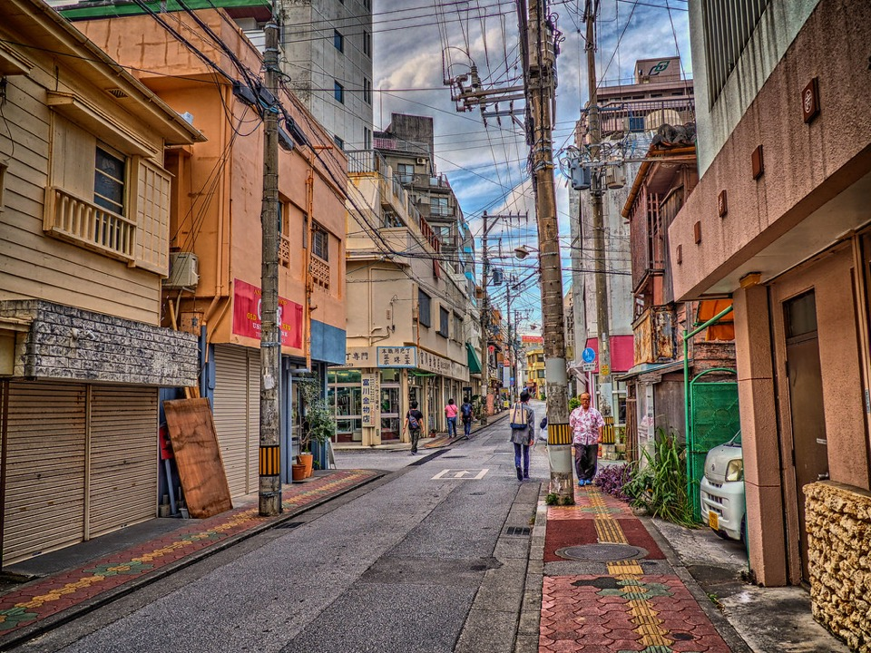
國際通南側文青小街，選物店古著咖啡陶器雜貨：琉球玻璃小物、紅型染手巾、獨立咖啡豆、島辣椒調味料。
🗺 地圖⛩ 神社（併入景點票選）
波上宮 ✅

介紹：沖繩總鎮守，海崖神社＋無敵海景。求交通安全、海上守護、良緣。御朱印種類多（含季節限定⚠️）。A計畫第一站。
參拜：自由（約07:00–日落）｜御朱印：約09:00–17:00，¥500起｜交通：碼頭計程車約10分
🗺 地圖沖宮（奧武山）✅

介紹：琉球八社之一，鎮座奧武山公園，境內天燈山御嶽，一次參拜神道＋御嶽兩種信仰。腹地大人少。
御朱印：約09:00–17:00｜交通：奧武山公園站步行約5分
🗺 地圖沖繩縣護國神社 ✅

介紹：奧武山公園內，與沖宮步行可達，一次收兩社御朱印。境內莊嚴，春有櫻秋有祭。
交通：奧武山公園站步行約8分（與沖宮順遊）
🗺 地圖末吉宮 ✅

介紹：琉球八社最古老神秘，藏於末吉公園深山，需爬石階穿越森林。御朱印在宮司宅領取（時間不定⚠️）。體力時間有餘者再訪。
交通：市壺川站步行約20分＋登山20分｜停留：約1小時
🗺 地圖🎁 伴手禮（那霸必買清單）
御菓子御殿 紅芋塔 ✅
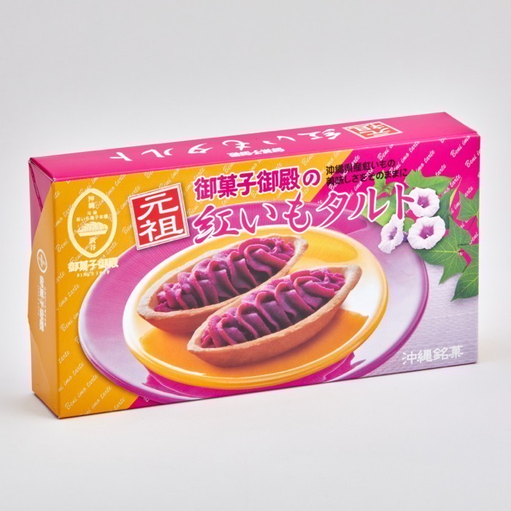
介紹：沖繩伴手禮之王，紅芋蛋塔酥鬆香甜。國際通店款式最多，機場免稅也有（比價後下手）。恩納本店附設紅芋工廠見學，岸上時間不合可略過。
價格：12入約¥1,200–1,500⚠️｜哪買：國際通店、平和通、唐吉訶德、機場
🗺 地圖ちんすこう（金楚糕）✅

介紹：琉球王朝獻上菓，豬油酥餅口感。必比：新垣本店原味 vs 雪塩味，兩家都拿才不會後悔。
價格：約¥600–1,000/盒⚠️｜哪買：平和通、市場周邊、唐吉訶德
🗺 地圖泡盛小瓶（久米仙・瑞泉）✅

介紹：沖繩蒸餾酒，30度小瓶送禮自用兩相宜。⚠️台灣入境酒類免稅上限1公升，買多要申報補稅，先算好瓶數。
價格：小瓶約¥800–1,500⚠️｜哪買：平和通、りうぼうB1、機場免稅（最划算多比價）
🗺 地圖島ぞうり（刻字夾腳拖）✅

介紹：沖繩人字拖，平和通現場刻名，30分鐘取件，自用送禮都好，輕便不佔行李空間。
價格：約¥2,000–3,000⚠️｜哪買：平和通商店街
🗺 地圖Orion生啤＋周邊 ✅

介紹：沖繩人的啤酒，本土限定款＋T恤開瓶器周邊。超商就有，回船前順手帶。
價格：罐裝約¥200–300⚠️｜哪買：超商、超市、唐吉訶德
🗺 地圖シークヮーサー加工品 ✅

介紹：沖繩香檸，酸爽醒腦，果汁＋果醬＋調味鹽，泡水泡酒都好，怕酸者先試喝。
價格：果汁約¥500–800⚠️｜哪買：公設市場、平和通、超市
🗺 地圖ジーマーミ豆腐の素 ✅

介紹：花生做的沖繩豆腐，Q彈＋濃郁，粉包買回家加水煮就好，帶給長輩零失敗。另有辣味噌口味可搭。
價格：約¥500–800/盒⚠️｜哪買：公設市場、平和通、超市、唐吉訶德
🗺 地圖✨ 當地特色（那霸限定體驗）
那霸限定體驗 ✅

- 島ぞうり刻字：平和通現場刻名，30分鐘取件，約¥2,000–3,000
- 壺屋陶器繪付け：需預約⚠️，岸上時間緊者改買現成品
- 週日步行者天國：國際通部分時段封街⚠️（以官方公告為準）
西来院（達摩寺）✅

介紹：臨済宗妙心寺派，山号達磨峰，本尊阿弥陀如来，明治時代自儀保町遷至現址，沖繩戰燒毀後重建（以上出自日文維基）。當地人稱達摩寺，2樓外搭一間神社（家人提供⚠️）。御朱印與參拜方式請現場確認。
地址：那覇市首里赤田町一丁目（OSM定位）｜交通：單軌首里站步行約15分⚠️｜停留：約30分。無授權好照片故不附圖，請點地圖看實景。
🗺 地圖安里八幡宮 ✅

介紹：琉球八社之一，市區小神社，安里站旁參拜5分鐘可結束。蒐集八社朱印者順路點，一般遊客可略過。
交通：安里站步行約3分
🗺 地圖✨ 家人新增提案
美國村 ✅

介紹：擁有濃厚美式風情與大型摩天輪，是適合漫步夕陽與挑選異國雜貨的熱門海濱商場。
停留：約2小時｜費用：免費入場｜位置：沖縄県中頭郡北谷町美浜（那霸市區約40–50分車程）
🗺 地圖
ガチャアイランド沖縄（玩具店・扭蛋）
介紹：牧志3丁目的扭蛋專門店，機台密度高、常換新系列，就在豬肉蛋飯糰／牧志市場旁，順路 1 分鐘。
位置：那覇市牧志3-1-1（距牧志市場約44m・步行1分）｜營業：現場確認｜★4.2
🗺 地圖オリジナルガチャ屋 OKINAWA（玩具店・扭蛋）
介紹：原創扭蛋與客製化扭蛋機，牧志市場旁走路 1 分鐘。
位置：那覇市牧志3-3-1（約55m）｜9:00–18:00｜★4.0
🗺 地圖アニメイト那覇国際通り店（玩具店・動漫）
介紹：動漫周邊＋扭蛋，國際通上 花ビル4F。
位置：牧志1-2-1 花ビル4F（距國際通約50m・步行1分）｜11:00–20:00｜★4.1
🗺 地圖ガシャポンバンダイオフィシャルショップ 那覇メインプレイス店（玩具店・扭蛋）
介紹：BANDAI 官方扭蛋專門店，機台最多、品項最齊。
位置：那覇メインプレイス商場內（距駿河屋約1.2km・車程約5分）｜★4.1
🗺 地圖TOYS SPOT PALO 北谷店（玩具店）
介紹：イオン北谷2F 玩具專賣，美國村旁走路 4 分鐘。
位置：北谷町美浜8-3 イオン北谷2F（距美國村約235m）｜★5.0
🗺 地圖サイコロ堂シーサイド（玩具店・桌遊）
介紹：桌遊、骰子、派對遊戲雜貨，營業到深夜。
位置：北谷町美浜34-3 デポセントラル1F（約303m・步行5分）｜10:00–翌1:00｜★4.9
🗺 地圖LITOR 那覇（漢堡）
介紹：久茂地的話題漢堡店（IG @litor_okinawa），手作漢堡與在地食材，11:00–23:00・不定休；距國際通北端步行約 6 分。
位置：那覇市久茂地3-25-20 NORTE 1F（縣廳前站步行4分・約450m）｜11:00–23:00（不定休）｜漢堡
🗺 地圖花商 花生豆腐専門店
介紹：沖繩傳統「じーまーみ豆腐」（花生豆腐）專門店，口感綿密像芝麻豆腐；松尾2丁目，距國際通步行約 3 分。
位置：那覇市松尾2-21-7（約250m）｜營業時間需確認｜花生豆腐
🗺 地圖南都製菓（Nanto-seika）
介紹：沖繩菓子老舖（ちんすこう等），本社在牧志南都ビル；直賣店另在曙・壺川・のうれんプラザ・泊ふ頭。
位置：那覇市牧志1-3-24 南都ビル2F（國際通旁）｜直賣時間需確認｜ちんすこう・菓子
🗺 地圖雪塩ちんすこう（南風堂）
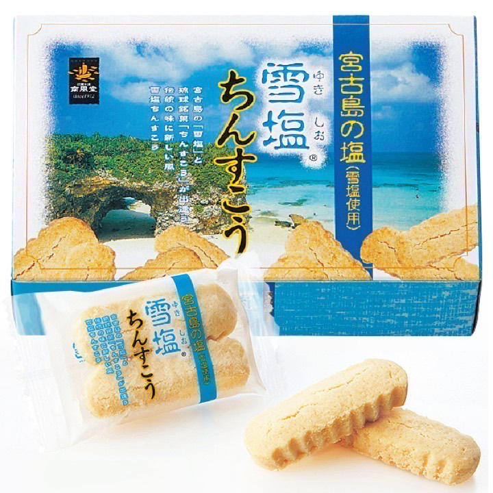
介紹：宮古島雪鹽×ちんすこう，鹹甜平衡、入口即化，小包裝好分送。
價格：¥170 起・48入 ¥1,296｜店家：唐吉軻德
🗺 地圖パナソニック ナノケア 吹風機
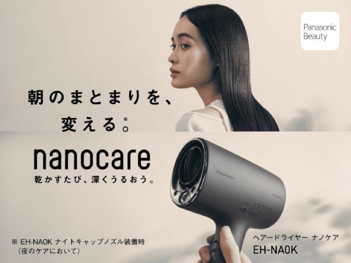
介紹：奈米水離子吹風機，快乾不毛躁；Bic 可免稅。
價格：約¥15,000–25,000｜店家：Bic Camera
🗺 地圖象印／虎牌 IH 炊飯器
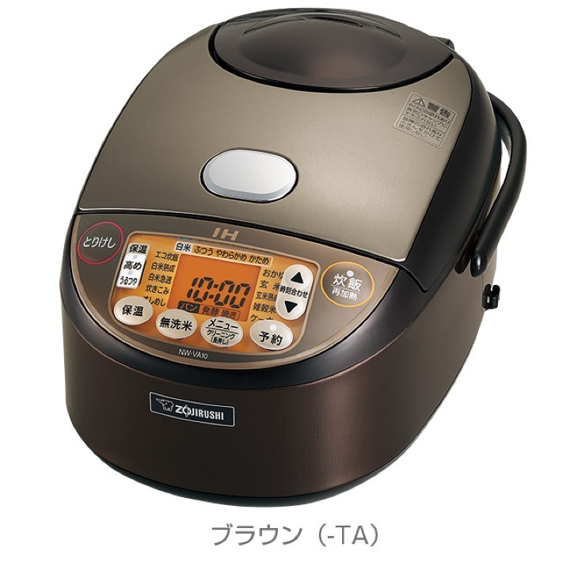
介紹：日本製 IH 炊飯器；100V，台灣 110V 多數可用，保固不跨海。
價格：約¥20,000–50,000｜店家：Bic Camera
🗺 地圖ビックカメラSelect 那覇国際通り店
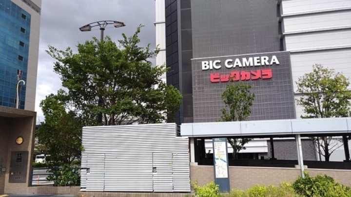
介紹：久茂地 3-29-2，縣廳前站 6 分；家電免稅，營業到 22:00。
營業：10:00–22:00｜店家：Bic Camera
🗺 地圖Air BicCamera 那覇空港店
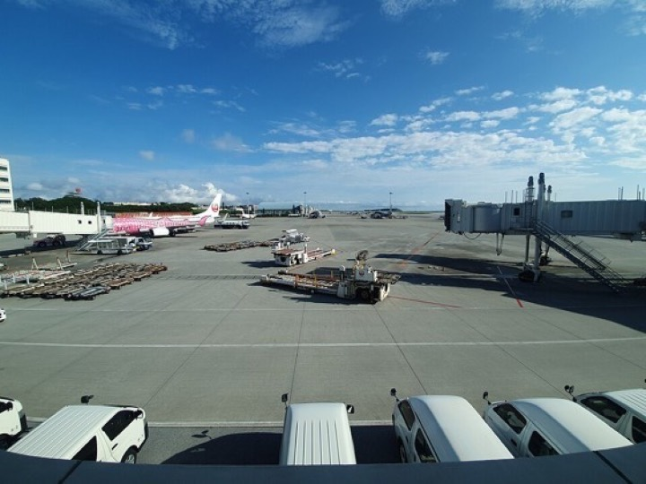
介紹：那覇機場 2F 出發大廳，營業到 20:30，最後補貨點。
營業：09:00–20:30｜店家：Bic Camera
🗺 地圖SONY WF-1000XM6
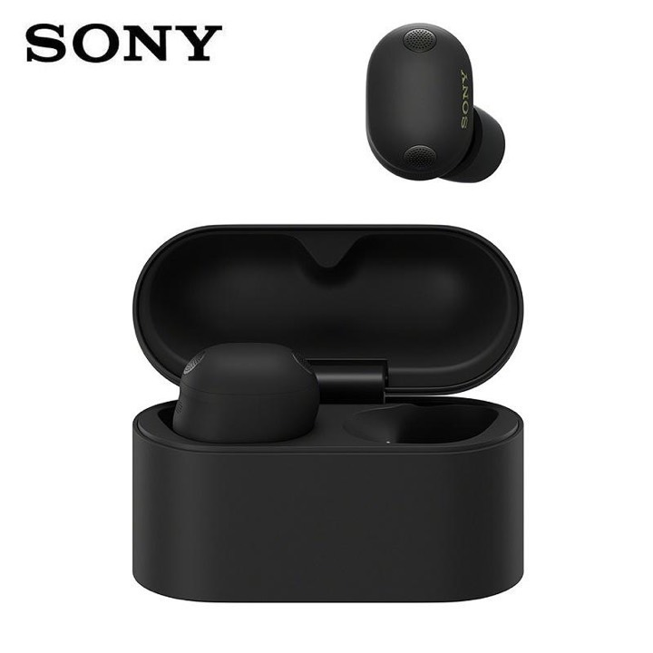
介紹：世界級降噪＋LDAC，旗艦真無線。
價格：約¥40,000–48,000｜參考：Amazon 耳機暢銷 #47
🗺 地圖Bose QuietComfort Ultra Earbuds 2
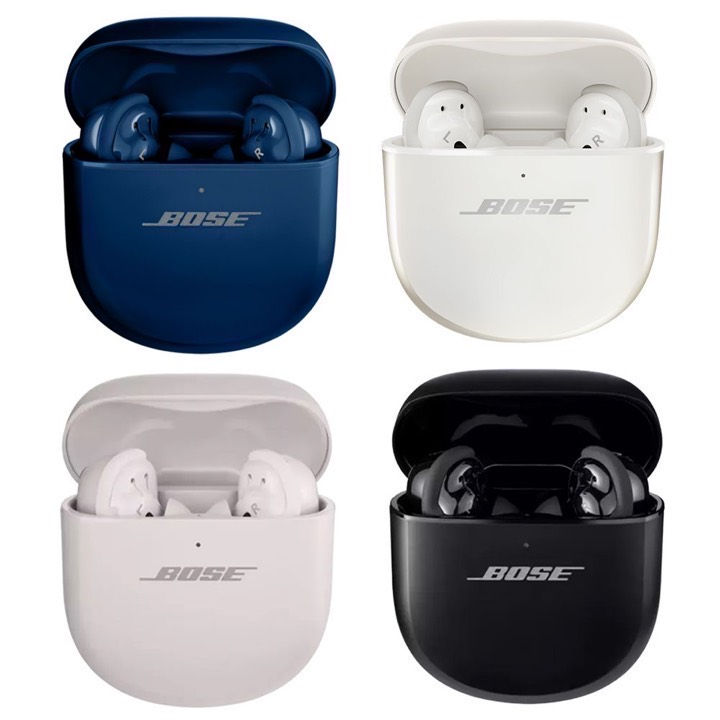
介紹：沉浸式音訊、頂級降噪。
價格：約¥39,000–45,000｜參考：Amazon 耳機暢銷 #46
🗺 地圖Anker Soundcore Liberty 5
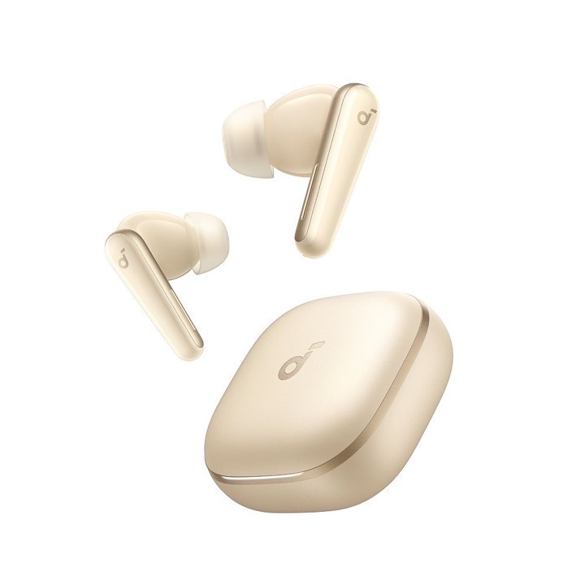
介紹：超降噪 3.5、48 小時續航。
價格：約¥12,000–15,000｜參考：Amazon 耳機暢銷 #4
🗺 地圖Anker Soundcore P42i
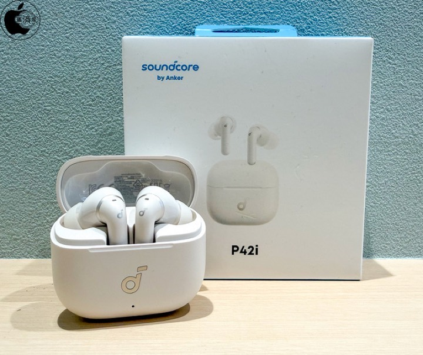
介紹：40 小時、IP55 防塵水，入門熱銷。
價格：約¥7,000–9,000｜參考：Amazon 耳機暢銷 #5
🗺 地圖Anker Soundcore V20i
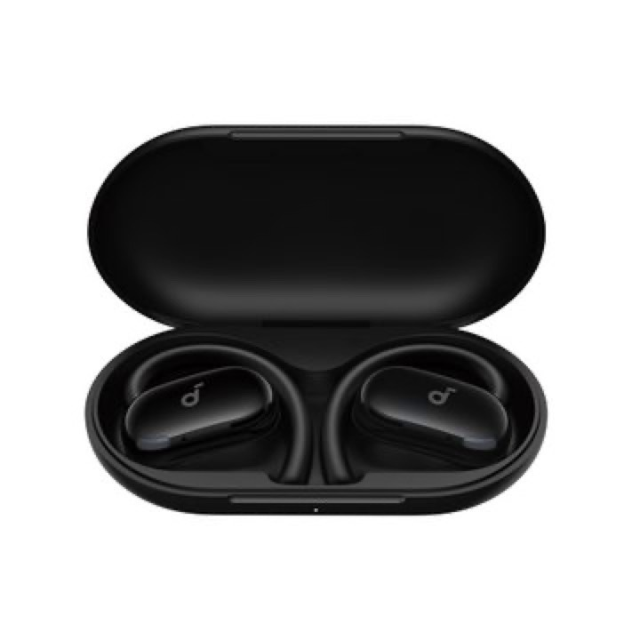
介紹：開放式耳掛，36 小時續航。
價格：約¥6,000–8,000｜參考：Amazon 耳機暢銷 #10
🗺 地圖Anker Soundcore Q30i
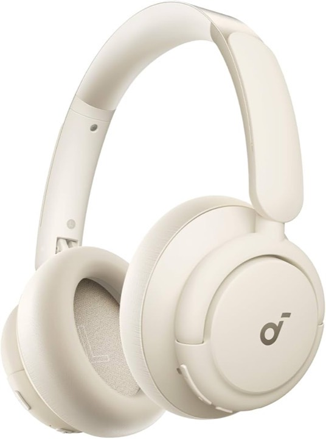
介紹：耳罩式降噪，80 小時續航。
價格：約¥8,000–10,000｜參考：Amazon 耳機暢銷 #20
🗺 地圖Anker Soundcore K20i
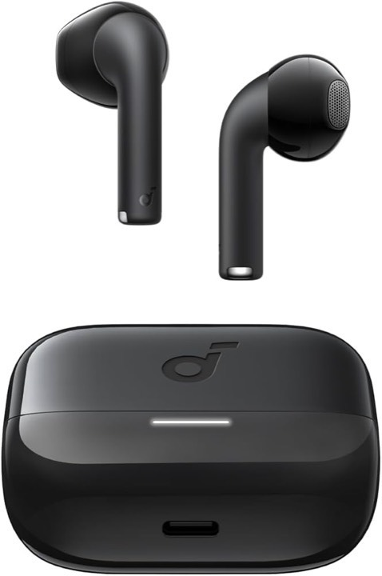
介紹：入門真無線，36 小時續航。
價格：約¥4,000–5,000｜參考：Amazon 耳機暢銷 #32
🗺 地圖Anker Soundcore AeroClip
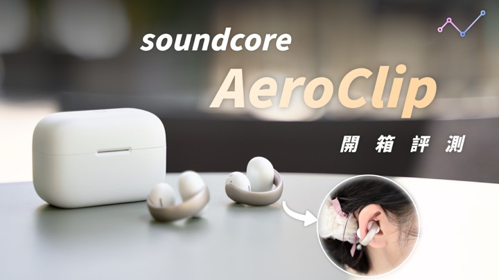
介紹：耳夾開放式，運動配戴穩。
價格：約¥9,000–12,000｜參考：Amazon 耳機暢銷 #53
🗺 地圖Xiaomi Redmi Buds 8 Lite
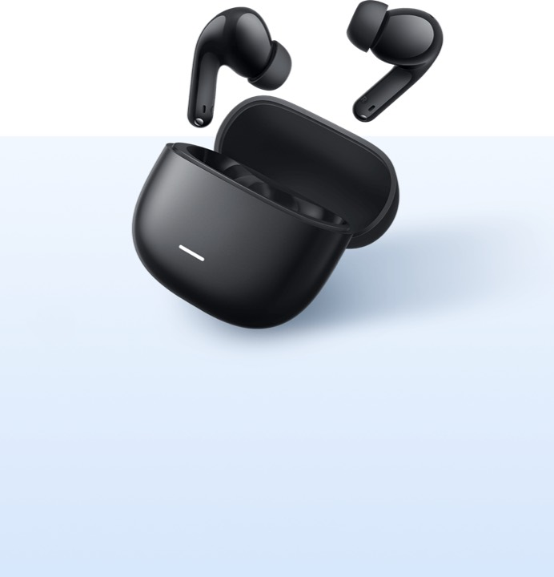
介紹：ANC 降噪，36 小時續航。
價格：約¥3,500–5,000｜參考：Amazon 耳機暢銷 #6
🗺 地圖Xiaomi Redmi Buds 6 Play
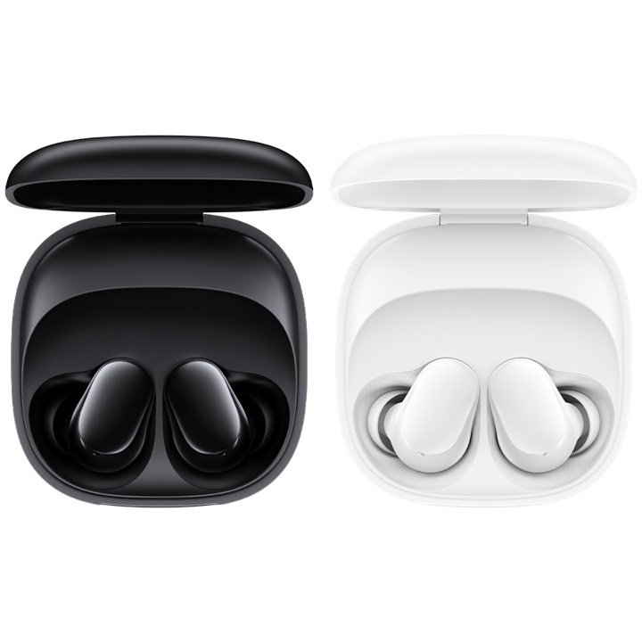
介紹：超輕入門款，36 小時。
價格：約¥2,500–3,500｜參考：Amazon 耳機暢銷 #13
🗺 地圖SOUNDPEATS C30
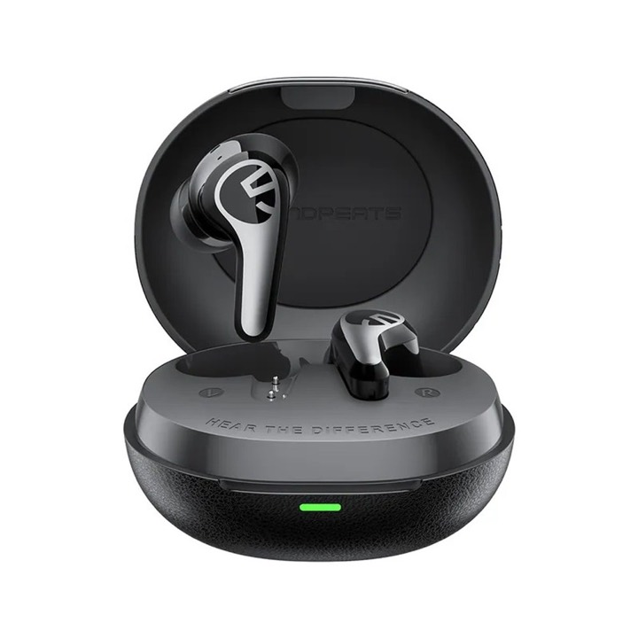
介紹：-52dB 降噪、LDAC，VGP 金獎。
價格：約¥5,000–7,000｜參考：Amazon 耳機暢銷 #14
🗺 地圖SOUNDPEATS PearlClip Pro
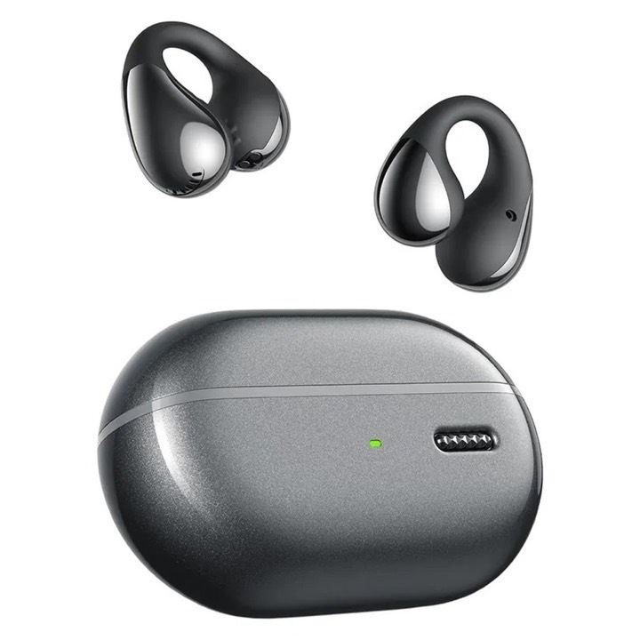
介紹：耳夾開放式，VGP 性價比大獎。
價格：約¥6,000–8,000｜參考：Amazon 耳機暢銷 #51
🗺 地圖EarFun Air Pro 4i
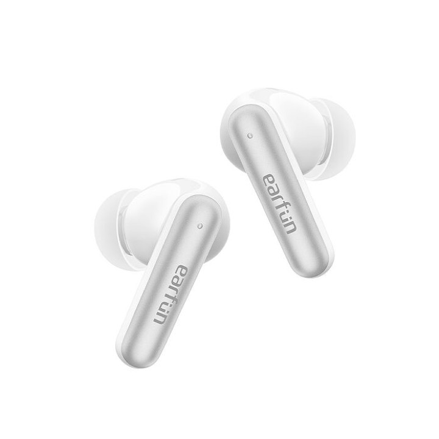
介紹：50dB 混合 ANC，高解析。
價格：約¥6,000–8,000｜參考：Amazon 耳機暢銷 #52
🗺 地圖
💄 美妝彩妝（藥妝店必買）
VTCOSMETICS フェイスマスク スキンケア 単品
介紹：VTCOSMETICS(ブイティコスメテックス) フェイスマスク スキンケア 単品 (1.CICA デイリースージングマスク)
價格：依店內｜參考：Amazon 美妝 暢銷 #1
🗺 地圖[Ateenia] Skin Clear Cleanse Clean 洁面油 芳香
介紹：[Ateenia] Skin Clear Cleanse Clean 洁面油 芳香 175毫升 毛孔/角质 卸妆 卸妆油 无需双重洁面 柑橘
價格：依店內｜參考：Amazon 美妝 暢銷 #2
🗺 地圖Perfect One Focus PERFECT ONE FOCUS 光滑卸妆膏
介紹：Perfect One Focus PERFECT ONE FOCUS 光滑卸妆膏 75g (光滑卸妆膏 a 75g <更新>(单品))
價格：依店內｜參考：Amazon 美妝 暢銷 #3
🗺 地圖LuLuLuLun Lulululun Premium GREEN Glow Up
介紹：LuLuLuLun Lulululun Premium GREEN Glow Up 32片装 面膜 面膜 大容量
價格：依店內｜參考：Amazon 美妝 暢銷 #4
🗺 地圖LuLuLun Lululuun High Dra EX 面膜 大容量 28片装
介紹：LuLuLun Lululuun High Dra EX 面膜 大容量 28片装
價格：依店內｜參考：Amazon 美妝 暢銷 #5
🗺 地圖ケアセラ AP 面部&身体乳液 大容量补充装 370ml | 高保湿乳液、セ
介紹：ケアセラ(CareCera) AP 面部&身体乳液 大容量补充装 370ml (含有神经酰胺加上7种天然型神经酰胺) | 高保湿乳液、セラミド乳液、セラミドケア、乾燥肌、敏
價格：依店內｜參考：Amazon 美妝 暢銷 #6
🗺 地圖FANCL 温和卸妆油 120毫升×1瓶 卸妆 角栓 毛孔 黑头 卸妆 | 假睫毛可
介紹：FANCL 温和卸妆油 120毫升×1瓶 卸妆 角栓 毛孔 黑头 卸妆 | 假睫毛可以
價格：依店內｜參考：Amazon 美妝 暢銷 #7
🗺 地圖CELIMAX Cerimax Letinal Shot 紧致增强剂 15毫升 |
介紹：CELIMAX Cerimax Letinal Shot 紧致增强剂 15毫升 | 霜视黄醇视黄醇维生素 A 皱纹小细纹烟酰胺色调护理毛孔保湿面部紧致夜间抗衰老护理低过敏配方
價格：依店內｜參考：Amazon 美妝 暢銷 #8
🗺 地圖奥蜜思 ORBIS 卸妆油 120mL 卸妆 毛孔 化妆品清除 黑斑 卸妆
介紹：奥蜜思(ORBIS) ORBIS 卸妆油 120mL 卸妆 毛孔 化妆品清除 黑斑 卸妆
價格：依店內｜參考：Amazon 美妝 暢銷 #9
🗺 地圖トゥヴェール バランシングGA ローション100mL 导入 化妆水 | 甘氨酸 6%
介紹：トゥヴェール バランシングGA ローション100mL 导入 化妆水 | 甘氨酸 6% 2 个月预爽肤水 壬二酸毛孔 皮脂 油光 粗糙 清爽 油性皮肤 混合皮肤 敏感肌肤 男士
價格：依店內｜參考：Amazon 美妝 暢銷 #10
🗺 地圖The Ordinary 烟酰胺*1 10%+锌1%*260ml 美容液 | 美容液
介紹：The Ordinary(オーディナリー) 【BEST COSME获奖】烟酰胺*1 10%+锌1%*2(N10+Z1面部精华)60ml 美容液 | 美容液 护肤 毛孔 亮白 暗沉
價格：依店內｜參考：Amazon 美妝 暢銷 #11
🗺 地圖ANUA 壬二酸15 强效舒缓精华液 30毫升 护肤 | 透明质酸高浓度精华毛孔皮脂
介紹：ANUA 壬二酸15 强效舒缓精华液 30毫升 护肤 | 透明质酸高浓度精华毛孔皮脂问题护理鹿精华角质护理光泽油水分平衡油性皮肤混合皮肤波动皮肤 azelaic acid seru
價格：依店內｜參考：Amazon 美妝 暢銷 #12
🗺 地圖ANUA PDRN 玻尿酸胶囊 100 精华液 30 毫升 护肤 | 智能胶囊处方水
介紹：ANUA ( 安娜) PDRN 玻尿酸胶囊 100 精华液 30 毫升 护肤 | 智能胶囊处方水光精华导入精华保湿保湿 Hari 水光皮肤 kimei 水分光泽皮肤胶原蛋白内干性皮
價格：依店內｜參考：Amazon 美妝 暢銷 #13
🗺 地圖ANUA PDRN100 玻尿酸胶囊精华面膜 护肤品 | 含精华成分水光皮肤护理片面
介紹：ANUA PDRN100 玻尿酸胶囊精华面膜 (7 片装) 护肤品 | 含精华成分水光皮肤护理片面膜包凝胶面膜保湿保湿 Hari Kimeme 水分胶原蛋白内干皮肤混合皮肤干性皮肤
價格：依店內｜參考：Amazon 美妝 暢銷 #15
🗺 地圖Melano CC 深层透明酵素洁面200G | 酵素洗顔、毛穴洗顔、毛穴汚れ、皮脂
介紹：Melano CC 深层透明酵素洁面200G【EC限定】 | 酵素洗顔、毛穴洗顔、毛穴汚れ、皮脂汚れ、肌のざらつき、シミ予防、そばかす予防、毛穴ケア、ビタミンC、朝のスキンケア、夜
價格：依店內｜參考：Amazon 美妝 暢銷 #16
🗺 地圖ONE BY KOSE 清洁 毛孔 毛孔清洁 油 主体 180mL 角质 黑斑 卸妆
介紹：ONE BY KOSE(ワンバイコーセー) 清洁 毛孔 毛孔清洁 油 主体 180mL 角质 黑斑 卸妆
價格：依店內｜參考：Amazon 美妝 暢銷 #17
🗺 地圖Medicube Zero 毛孔垫2.0 化妆水 擦拭化妆水 擦拭垫 | 爽肤水爽肤
介紹：Medicube Zero 毛孔垫2.0 (70 Pads) 化妆水 擦拭化妆水 擦拭垫 | 爽肤水爽肤垫冷却擦拭垫 Medicube 面膜沐浴垫部分包早晨包毛孔开放毛孔紧致
價格：依店內｜參考：Amazon 美妝 暢銷 #18
🗺 地圖ITO 洗脸巾 人气包装 | 60张×3套,获得最佳化妆品奖,OEKO-TEX认证,
介紹：ITO 洗脸巾 人气包装 | 60张×3套,获得最佳化妆品奖,OEKO-TEX认证,对宝宝温和,ITO原创鲨鱼小纹压花面料,一次性毛巾,面巾一次性,护肤毛巾
價格：依店內｜參考：Amazon 美妝 暢銷 #19
🗺 地圖Melano CC 药用集中渗透 高级美容液 20毫升 | 商品カテゴリ検索、日常ケ
介紹：Melano CC 药用集中渗透 高级美容液 20毫升 (x 1) | 商品カテゴリ検索、日常ケア、使いやすい
價格：依店內｜參考：Amazon 美妝 暢銷 #20
🗺 地圖KATE リップモンスター（持色唇膏）
介紹：開架傳說級持色唇膏，喝水吃東西後仍留色。05 ダークフィグ、03 陽炎最熱門，藥妝店常缺貨，看到現貨先拿。
價格：約¥1,540｜哪買：松本清、大國藥妝、唐吉訶德
🗺 地圖CANMAKE むちぷるティント（水潤染唇）
介紹：770 日圓的平價染唇，光澤感＋持色力兼具，台灣潮濕天氣也好用。02、05 フィグピューレ是日常色。
價格：約¥770｜哪買：藥妝店、唐吉訶德
🗺 地圖CEZANNE チークブラッシュ（腮紅）
介紹：@cosme 常勝軍、550 日圓。粉質細緻、自然血色，01 フォギーローズ、05 メープルアプリコット最百搭。
價格：約¥550｜哪買：藥妝店、唐吉訶德
🗺 地圖CANMAKE プティパレットアイズ（8 色眼影盤）
介紹：手掌大小的 8 色眼影盤，旅行帶一盤就能畫全妝，發色清淡不易失手，新手與送禮都適合。
價格：約¥1,078｜哪買：藥妝店、唐吉訶德
🗺 地圖ヒロインメイク ロング＆カールマスカラ
介紹：抗汗抗油、捲翹持久，溫水可卸。沖繩海邊玩水也不易暈，開架睫毛膏長銷冠軍。
價格：約¥1,320｜哪買：藥妝店、唐吉訶德
🗺 地圖マジョリカ マジョルカ ラッシュエキスパンダー
介紹：資生堂旗下開架經典，束感纖長、娃娃睫毛效果，包裝可愛，送禮自用都適合。
價格：約¥1,320｜哪買：藥妝店、唐吉訶德
🗺 地圖CEZANNE 皮脂テカリ防止下地（控油粧前乳）
介紹：控油持妝神器，海島高溫潮濕也不易脫妝。SPF28 PA++，660 日圓的爆款，藍色款修飾蠟黃。
價格：約¥660｜哪買：藥妝店、唐吉訶德
🗺 地圖ANESSA パーフェクトUV スキンケアミルク NA
介紹：SPF50+ PA++++、耐水耐摩擦，沖繩海邊與浮潛必備。日本藥妝價比台灣便宜，回程前補貨。
價格：約¥3,058（60mL）｜哪買：藥妝店、唐吉訶德、機場免稅
🗺 地圖ビオレUV アクアリッチ ウォータリーエッセンス
介紹：水感清爽、不泛白，日常補擦不黏膩。SPF50+ PA++++，70g 大容量，CP 值最高的隨身防曬。
價格：約¥1,095（70g）｜哪買：藥妝店、超市、唐吉訶德
🗺 地圖by Amazon ユーシップFRテープVα 50枚
介紹：【第2類医薬品】by Amazon ユーシップFRテープVα 50枚
價格：依店內｜參考：Amazon 貼布 暢銷 #1
🗺 地圖by Amazon 洛基特效LX 磁带α 21张
介紹：【第2类医药品】 by Amazon 洛基特效LX 磁带α 21张
價格：依店內｜參考：Amazon 貼布 暢銷 #5
🗺 地圖洛索洛芬胶带EX大号NAGAWA 7片装 ×5
介紹：【第2类医药品】洛索洛芬胶带EX大号NAGAWA 7片装 ×5
價格：依店內｜參考：Amazon 貼布 暢銷 #15
🗺 地圖REYS 雷斯 乳清蛋白 山泽 礼明 监修 1千克 国内制造 含有7种维生素 WPC
介紹：REYS 雷斯 乳清蛋白 山泽 礼明 监修 1千克 国内制造 含有7种维生素 WPC 蛋白质 蛋白粉 蛋白粉 蛋白粉 (咖啡欧蕾口味)
價格：依店內｜參考：Amazon 保健品 暢銷 #1
🗺 地圖NATUREMADE 大塚制药超级复合维生素&矿物质 120粒 120天量
介紹：NATUREMADE 大塚制药超级复合维生素&矿物质 120粒 120天量
價格：依店內｜參考：Amazon 保健品 暢銷 #2
🗺 地圖VITAS VITA POWER 维塔功率 玛卡 锌 复合维生素 120粒 30天量
介紹：VITAS VITA POWER 维塔功率 玛卡 锌 复合维生素 120粒 30天量 | 12種類の栄養機能食品、マカエキス末・レッドマカエキス末・トンカットアリ抽出物・黒ショウガ
價格：依店內｜參考：Amazon 保健品 暢銷 #3
🗺 地圖Dear-Natura Style 锌 90 片 朝日 补充剂 Dear-Natur
介紹：Dear-Natura Style 锌 90 片(90 天) 朝日 补充剂 Dear-Natura 在日本国内工厂生产 每日1片建议 包装 含玛卡提取物
價格：依店內｜參考：Amazon 保健品 暢銷 #4
🗺 地圖SAVAS 大豆蛋白 100 可可味 920克 明治 NEXTBODY
介紹：SAVAS 大豆蛋白 100 可可味 920克 明治 NEXTBODY【Amazon.co.jp限定】
價格：依店內｜參考：Amazon 保健品 暢銷 #5
🗺 地圖DHC 复合维生素 实惠90日分 | [营养功能食品]
介紹：DHC 复合维生素 实惠90日分 (90粒) | [营养功能食品(维生素B1、维生素B2、维生素B6、维生素B12、烟酸、泛酸、生物素、叶酸、维生素C、维生素D、维生素E)]
價格：依店內｜參考：Amazon 保健品 暢銷 #6
🗺 地圖DHC 维生素C实惠装 90 天量 | [营养功能食品]
介紹：DHC 维生素C(硬胶囊)实惠装 90 天量 (180 粒) | [营养功能食品(维生素C、维生素B2)]
價格：依店內｜參考：Amazon 保健品 暢銷 #7
🗺 地圖ザバス 乳清蛋白100 浓郁巧克力味 1千克 明治
介紹：ザバス(SAVAS) 乳清蛋白100 浓郁巧克力味 1千克 明治【Amazon.co.jp限定】
價格：依店內｜參考：Amazon 保健品 暢銷 #8
🗺 地圖アンビーク 男士复合维生素 通常30天量×1袋 锌 玛卡 片剂 维生素14种 柠檬酸
介紹：アンビーク 男士复合维生素 通常30天量×1袋 锌 玛卡 片剂 维生素14种 柠檬酸 精氨酸 瓜氨酸 持续型 营养功能食品 | 即时充值 保健品 男性 健康 营养补给
價格：依店內｜參考：Amazon 保健品 暢銷 #9
🗺 地圖一水肌酸 610000毫克 哈尔克因子 610克 122份 纯粉末 无添加
介紹：一水肌酸 610000毫克 哈尔克因子 610克 122份 纯粉末 无添加
價格：依店內｜參考：Amazon 保健品 暢銷 #10
🗺 地圖Xplosion 蛋白粉 3千克 乳清蛋白 牛奶巧克力味 WPC X-PLOSION
介紹：Xplosion 蛋白粉 3千克 乳清蛋白 牛奶巧克力味 WPC X-PLOSION 日本制造 | 持续挑战令人信服的性价比,100%乳清,国内工厂生产,氨基酸分数 100,防兴奋
價格：依店內｜參考：Amazon 保健品 暢銷 #11
🗺 地圖明治（Savas）牛奶蛋白 零脂肪 香蕉风味 200毫升纸包×24瓶装
介紹：明治（Savas）牛奶蛋白 零脂肪 香蕉风味 200毫升纸包×24瓶装
價格：依店內｜參考：Amazon 保健品 暢銷 #13
🗺 地圖Naturemade 大塚製薬超级维生素D 90粒 90天份 | 健康リスクに立ち向
介紹：Naturemade(ネイチャーメイド) 大塚製薬超级维生素D(1000I.U.) 90粒 90天份 | 健康リスクに立ち向かう体へ。アメリカでは、生活習慣が気になる方に注目されて
價格：依店內｜參考：Amazon 保健品 暢銷 #14
🗺 地圖NATUREMADE 大塚制药 超级鱼油 90粒 90天量 | EPA・DHAを1粒
介紹：NATUREMADE 大塚制药 超级鱼油(EPA/DHA) 90粒 90天量 | EPA・DHAを1粒にギュッと270mg EPA・DHAはオメガ 3 系（n-3 系）脂肪酸で青魚
價格：依店內｜參考：Amazon 保健品 暢銷 #15
🗺 地圖DHC 维生素B混合 90天用量 营养功能食品 | [营养功能食品]
介紹：DHC 维生素B混合 90天用量 营养功能食品(烟酸、生物素、维生素B12、叶酸) | [营养功能食品(维生素B12、烟酸、生物素、叶酸)]
價格：依店內｜參考：Amazon 保健品 暢銷 #16
🗺 地圖Naturemade 大冢制药 钙、镁、锌 90粒 30日分

介紹：Naturemade(ネイチャーメイド) 大冢制药 钙、镁、锌 90粒 30日分
價格：依店內｜參考：Amazon 保健品 暢銷 #18
🗺 地圖REYS 丽姿 大豆蛋白粉 山泽 礼明 监修 1千克 国内制造 含有7种维生素 SO
介紹：REYS 丽姿 大豆蛋白粉 山泽 礼明 监修 1千克 国内制造 含有7种维生素 SOY 蛋白粉 (巧克力味) | 植物性たんぱく質ソイプロテイン使用
價格：依店內｜參考：Amazon 保健品 暢銷 #19
🗺 地圖DHC DHA 30日分 | [功能性标示食品]
介紹：DHC DHA 30日分 (120粒)【功能性标示食品】 | [功能性标示食品]
價格：依店內｜參考：Amazon 保健品 暢銷 #20
🗺 地圖🛍 3COINS 必買 30（台灣旅客參考）
排名參考日本 3COINS 官方暢銷榜與台灣旅客討論度整理，僅供採買參考、非官方名次。價格為日本官網稅込價，門市庫存與台灣售價依現場為準；沖繩門市：3COINS+plus 那霸 Main Place／PARCO CITY／永旺夢樂城沖繩來客夢。
01. 3COINS 環保購物袋
介紹：大容量又輕，折起來只有手掌大，回程裝戰利品或超市採買都好用。
價格：¥1,100（稅込）｜哪買：3COINS+plus 那霸 Main Place／PARCO CITY／Rycom
🔗 官方商品頁02. 3COINS 摺疊旅行袋
介紹：可折成扁平收納，回程多買一箱也不怕；有滾輪與提把，尺寸依航空公司規定確認。
價格：¥3,300（稅込）｜哪買：3COINS+plus 那霸 Main Place／PARCO CITY／Rycom
🔗 官方商品頁03. 3COINS 自動壓縮袋 3 入
介紹：換季衣物、外套、棉被用手捲或吸塵器就能壓縮，行李瞬間多出空間。
價格：¥330（稅込）｜哪買：3COINS+plus 那霸 Main Place／PARCO CITY／Rycom
🔗 官方商品頁04. 3COINS 電動壓縮機
介紹：搭配壓縮袋使用的電動抽氣機，飯店整理行李比手捲快很多。
價格：¥1,100（稅込）｜哪買：3COINS+plus 那霸 Main Place／PARCO CITY／Rycom
🔗 官方商品頁05. 3COINS 旅行吊掛衣物收納
介紹：吊掛式衣物收納，飯店衣櫃直接掛，回程整袋提走不漏東漏西。
價格：¥1,320（稅込）｜哪買：3COINS+plus 那霸 Main Place／PARCO CITY／Rycom
🔗 官方商品頁06. 3COINS 有機棉迷你浴巾
介紹：有機棉迷你浴巾，吸水快乾、體積小，海邊或溫泉後很好用。
價格：¥880（稅込）｜哪買：3COINS+plus 那霸 Main Place／PARCO CITY／Rycom
🔗 官方商品頁07. 3COINS 摺疊頸枕
介紹：飛機、巴士上補眠用，支撐頸部，摺疊後不占空間。
價格：¥550（稅込）｜哪買：3COINS+plus 那霸 Main Place／PARCO CITY／Rycom
🔗 官方商品頁08. 3COINS 防潑水迷你斜背包
介紹：防潑水材質，手機、護照、行動電源一包搞定，午後雷陣雨也不怕。
價格：¥792（稅込）｜哪買：3COINS+plus 那霸 Main Place／PARCO CITY／Rycom
🔗 官方商品頁09. 3COINS 防潑水輕量摺疊包
介紹：輕量防潑水摺疊包，可塞進隨身包，臨時採買或海邊玩水都方便。
價格：¥550（稅込）｜哪買：3COINS+plus 那霸 Main Place／PARCO CITY／Rycom
🔗 官方商品頁10. 3COINS 多功能小物收納包
介紹：多隔層小物包，化妝品、充電線、藥品分類清楚，送禮也實用。
價格：¥1,100（稅込）｜哪買：3COINS+plus 那霸 Main Place／PARCO CITY／Rycom
🔗 官方商品頁11. 3COINS 多隔層 3C 收納包
介紹：專門收納充電器、線材、耳機與行動電源，出差旅行不再翻包。
價格：¥880（稅込）｜哪買：3COINS+plus 那霸 Main Place／PARCO CITY／Rycom
🔗 官方商品頁12. 3COINS 透明收納箱包 L
介紹：透明收納箱包 L，內容物一眼可見，裝衣服或戰利品都合適。
價格：¥330（稅込）｜哪買：3COINS+plus 那霸 Main Place／PARCO CITY／Rycom
🔗 官方商品頁13. 3COINS 透明收納箱包 LL
介紹：透明收納箱包 LL，大容量可放外套、毛巾，搬家與旅行兩用。
價格：¥550（稅込）｜哪買：3COINS+plus 那霸 Main Place／PARCO CITY／Rycom
🔗 官方商品頁14. 3COINS 附蓋透明收納盒
介紹：附蓋透明寬收納盒，堆疊不亂，化妝品與雜物分類。
價格：¥330（稅込）｜哪買：3COINS+plus 那霸 Main Place／PARCO CITY／Rycom
🔗 官方商品頁15. 3COINS 可拆隔板三層收納盒
介紹：三層收納盒，隔板可拆，藥品、文具、飾品都能分類。
價格：¥770（稅込）｜哪買：3COINS+plus 那霸 Main Place／PARCO CITY／Rycom
🔗 官方商品頁16. 3COINS 壁掛式文件收納
介紹：壁掛式文件收納，護照、票券、行程表集中，出門不手忙腳亂。
價格：¥880（稅込）｜哪買：3COINS+plus 那霸 Main Place／PARCO CITY／Rycom
🔗 官方商品頁17. 3COINS 壁掛式繪本收納
介紹：壁掛式繪本收納，小孩房或玄關收納童書，視覺整齊。
價格：¥880（稅込）｜哪買：3COINS+plus 那霸 Main Place／PARCO CITY／Rycom
🔗 官方商品頁18. 3COINS 有機棉洗臉毛巾
介紹：有機棉洗臉毛巾，親膚吸水，輕薄好帶，多色可選。
價格：¥550（稅込）｜哪買：3COINS+plus 那霸 Main Place／PARCO CITY／Rycom
🔗 官方商品頁19. 3COINS 吸水乾髮帽
介紹：吸水乾髮帽，洗完頭包著就不滴水，海邊玩水後必備。
價格：¥330（稅込）｜哪買：3COINS+plus 那霸 Main Place／PARCO CITY／Rycom
🔗 官方商品頁20. 3COINS 蠶絲眼罩
介紹：100% 蠶絲眼罩，透氣親膚，飛機與飯店睡眠好用。
價格：¥660（稅込）｜哪買：3COINS+plus 那霸 Main Place／PARCO CITY／Rycom
🔗 官方商品頁21. 3COINS 2D 立體口罩 30 枚
介紹：2D 立體口罩 30 枚入，透氣不悶，日常補貨型伴手禮。
價格：¥330（稅込）｜哪買：3COINS+plus 那霸 Main Place／PARCO CITY／Rycom
🔗 官方商品頁22. 3COINS 藥品手冊收納包
介紹：藥品手冊收納包，放處方箋、藥品、健保卡，回診或旅行都方便。
價格：¥550（稅込）｜哪買：3COINS+plus 那霸 Main Place／PARCO CITY／Rycom
🔗 官方商品頁23. 3COINS 分裝小盒 4 入
介紹：4 個小分裝盒，藥品、飾品、糖果分類，輕巧不占空間。
價格：¥330（稅込）｜哪買：3COINS+plus 那霸 Main Place／PARCO CITY／Rycom
🔗 官方商品頁24. 3COINS 鑰匙圈展示架
介紹：鑰匙圈展示架，扭蛋、吊飾、小物一次展示。
價格：¥660（稅込）｜哪買：3COINS+plus 那霸 Main Place／PARCO CITY／Rycom
🔗 官方商品頁25. 3COINS 圖案襪（混色）
介紹：混色圖案襪，材質柔軟、顏色可愛，適合送同事朋友。
價格：¥330（稅込）｜哪買：3COINS+plus 那霸 Main Place／PARCO CITY／Rycom
🔗 官方商品頁26. 3COINS 微波調理器（6 合一）
介紹：6 合一微波調理器，煎、炒、煮、蒸、炊飯一鍋完成，免開火。
價格：¥2,200（稅込）｜哪買：3COINS+plus 那霸 Main Place／PARCO CITY／Rycom
🔗 官方商品頁27. 3COINS 2WAY 油噴瓶
介紹：2WAY 油噴瓶，可倒可噴，控制用油量，露營與日常料理都好用。
價格：¥550（稅込）｜哪買：3COINS+plus 那霸 Main Place／PARCO CITY／Rycom
🔗 官方商品頁28. 3COINS 2WAY 迷你噴瓶
介紹：2WAY 迷你噴瓶，分裝化妝水、酒精或醬油，旅行攜帶不漏。
價格：¥330（稅込）｜哪買：3COINS+plus 那霸 Main Place／PARCO CITY／Rycom
🔗 官方商品頁29. 3COINS 微波玻璃蒸籠鍋
介紹：微波玻璃蒸籠鍋，微波就能蒸蔬菜、包子，健康料理少油煙。
價格：¥1,980（稅込）｜哪買：3COINS+plus 那霸 Main Place／PARCO CITY／Rycom
🔗 官方商品頁30. 3COINS 衛生用品壓縮收納包 L
介紹：衛生用品壓縮收納包 L，外出攜帶衛生棉或尿布，壓縮後不占空間。
價格：¥770（稅込）｜哪買：3COINS+plus 那霸 Main Place／PARCO CITY／Rycom
🔗 官方商品頁🏝 宮古島（12/17・08:00–18:00・17:00前返船）
補充：宮古島無美術館（看展請去那霸おきみゅー）、無百貨公司、無大型家電量販。
与那覇前浜ビーチ ✅

介紹：7km白沙＋漸層藍，「東洋一美しい」海灘。12月不下水，沙灘散步＋來間大橋遠眺，停留約1–1.5小時。
費用：免費｜交通：平良港車程約15分（包車）
🗺 地圖東平安名岬 ✅


介紹：2km細長海岬＋白色燈塔（可登頂約¥200），宮古代表風景。遊步道來回約40分，風大注意保暖。
停留：約1.5小時｜交通：平良港車程約30分
🗺 地圖砂山ビーチ ✅

介紹：天然岩石拱門＋白沙，需走沙丘小徑（約10分），穿好走的鞋。停留約40分，可與前浜二選一。
🗺 地圖雪塩ミュージアム ✅

介紹：製鹽見學＋試吃＋雪鹽霜淇淋（約¥400），免費入館。雪鹽小包全島通用伴手禮，此處一次買齊。雨天也適合。
停留：約1小時
🗺 地圖伊良部大橋（車窓）✅

介紹：日本最長免費橋梁，不下車 drive-through 賞海，雨天備案好選擇。來回約1小時。
🗺 地圖宮古そば（古謝そば屋／島の駅）✅


特色：鰹魚清湯＋藏在麵下的軟骨排骨。12月芒果非產季⚠️。島の駅可順買黑糖泡盛海葡萄乾貨。
必點：軟骨ソーキそば＋じゅーしー（炊飯），麵別攪先喝湯。
花費：¥800–1,500/人
🗺 地圖丸吉食堂（伊良部島）✅


特色：伊良部島名店，海蘊麵＋伊良部そば，開店即排隊、賣完打烊⚠️。走伊良部大橋行程者順路，市區出發單程約40分。
必點：もずくそば＋伊良部そば，賣完打烊中午前到。
花費：¥800–1,200/人｜時間：11:00–賣完為止
🗺 地圖島の駅みやこ（購物）✅
介紹：農產直賣＋美食＋伴手禮複合設施，宮古牛可樂餅現吃、黑糖ちんすこう泡盛價格實在。室內為主，雨天友善，停留約1–2小時。
必點：宮古牛可樂餅＋黑糖霜淇淋，現買現吃。
🗺 地圖宮古島市総合博物館 ✅

介紹：宮古自然＋歷史民俗一次看，人頭稅、御嶽信仰解說詳細，冷氣強雨天完美備案，停留約1小時。
費用：約¥300⚠️｜交通：平良市區，包車順路
🗺 地圖漲水御嶽 ✅

介紹：宮古最高聖地，巨石＋老樹參道，免費但請肅靜、勿觸碰祭壇。順路15分，心誠者訪。
交通：平良市區車程約10分
🗺 地圖

下地島17END（飛機迷）✅

介紹：跑道頭海灘看飛機低空掠過，聖地級拍攝點。需配合航班時間＋包車前往（單程約40分），時間緊者略過。
🗺 地圖サンエー宮古島シティ ✅

介紹：宮古島最大購物中心，超市＋服飾＋藥妝＋美食街，伴手禮比觀光區便宜。宮古島無百貨公司，這裡就是最齊的一站⚠️（店面以現場為準）。
時間：約10:00–22:00⚠️｜交通：平良市區車程約10分
🗺 地圖ドン・キホーテ宮古島店 ✅
介紹：藥妝零食伴手禮最後補貨點，可退稅⚠️。宮古島無大型家電量販，電器請去那霸買或回台灣買。
🗺 地圖🎁 伴手禮（宮古必買）
雪塩（宮古島の雪塩）✅

介紹：宮古島第一伴手禮，粉末雪鹽＋各種調味鹽，煮飯撒一點就升級。雪塩館款式最齊，買小包裝多種口味分送。
價格：小包約¥500–1,000⚠️｜哪買：雪塩館、島の駅、サンエー
🗺 地圖宮古黑糖 ✅

介紹：多良間島黑糖上等，直接吃＋黑糖飴＋黑糖粉，配茶配咖啡，長輩最愛的安全牌。
價格：約¥400–800⚠️｜哪買：島の駅、雪塩館、サンエー
🗺 地圖菊之露泡盛 ✅

介紹：宮古代表泡盛，菊之露＋沖之光，宮古限定包裝送禮有面子。⚠️台灣入境酒類免稅上限1公升。
價格：小瓶約¥1,000–2,000⚠️｜哪買：島の駅、雪塩館、サンエー
🗺 地圖マンゴー加工品 ✅

介紹：⚠️12月非產季，生果別期待，改買芒果乾＋果醬＋果汁，一樣有宮古味。
價格：果乾約¥800–1,500⚠️｜哪買：島の駅、サンエー
🗺 地圖まもる君グッズ ✅

介紹：宮古島警察局吉祥物，人面人身的微妙設計紅到本土，T恤吊飾文具都好笑好送，小孩大人都買單。
價格：小物約¥500–2,000⚠️｜哪買：島の駅、サンエー、書店文具店
🗺 地圖✨ 當地特色（宮古限定體驗）
宮古限定體驗 ✅
.jpeg?width=960)
- 伊良部大橋夕陽drive：回港前順光最美（包車跟司機講）
- 下地島17END追飛機：配合航班時間，飛機迷聖地
- 漲水御嶽晨訪：觀光客到達前的肅靜時刻
✨ 家人新增提案

よしみ玩具商会（玩具店）
介紹：平良的老字號玩具店，玩具與模型；步行 9 分可到。
位置：宮古島市平良下里674-1（距麺や大和約519m）｜10:00–19:00｜★1.0
🗺 地圖おもちゃのBANBAN（玩具店）
介紹：平良西里的玩具店，品項多、營業到晚上。
位置：宮古島市平良西里1003-1（距ドンキ約1.0km・計程車4–5分）｜10:00–21:00｜★4.3
🗺 地圖🪨 石垣島（12/19・09:00–19:00・18:00前返船）
補充：石垣島無美術館、無百貨公司、無大型家電量販。買電器請去那霸（全國連鎖家電量販⚠️出發前查地圖）或回台灣買。
川平湾グラスボート ✅

介紹：日本百景＋米其林三星海灣。海灣禁泳，玻璃船30分看珊瑚＋海龜（運氣）。展望台免費，停車場有ミルミル本舗霜淇淋。
費用：玻璃船約¥1,000–1,500｜停留：約1.5小時｜交通：石垣港車程約30分（包車）
🗺 地圖石垣やいま村 ✅

介紹：紅瓦古民家＋松鼠猴＋名蔵湾展望，傳統舞踊時刻限定⚠️。長袖＋防蚊，停留約1.5小時。
🗺 地圖
フサキビーチ（日落備選）✅

介紹：西海岸日落名所，フサキリゾート前沙灘，12月日落約17:40。回船前順路看夕陽需精算時間⚠️（18:00返船）。
🗺 地圖八重山そば（島そば一番地／來夏）✅


特色：細麵＋鰹豚清湯＋豬肉片。ひとし本店要預約且多為晚餐⚠️，午餐以そば＋市場小吃為主。
必點：八重山そば＋じゅーしー，加自家製辣油。
🗺 地圖明石食堂（八重山そば名店 ⚠️）


特色：石垣最難吃到的そば，ソーキ肉大塊＋濃郁湯頭，開店排隊、午前賣完⚠️。位明石聚落（偏遠，包車順路才去），趕行程者略過。
必點：ソーキそば（大）＋自家製辣油，午前賣完早去。
花費：¥900–1,300/人
🗺 地圖石垣牛（午間套餐）✅


特色：日本最南品牌和牛，午間燒肉套餐¥2,500–4,000（金城／MARU系），比晚餐划算。想吃晚餐級需訂位⚠️。
必點：午間拼盤＋特上牛排，先吃原味再沾醬。
🗺 地圖ひとし石敢當店（預約難 ⚠️）

特色：石垣第一海鮮居酒屋，マグロ＋石垣牛握壽司＋島魚刺身，tabelog高分。電話預約一位難求⚠️，午餐時段去碰運氣或直接放棄改吃そば＋市場。
必點：マグロ盛合せ＋石垣牛握壽司＋島魚刺身，有位就全點。
花費：¥3,000–5,000/人
🗺 地圖サーターアンダギー＋ゲンキクール ✅

特色：現炸黑糖甜甜圈＋石垣限定乳酸飲「ゲンキクール」（¥200），市場內邊走邊吃組合。
必點：現炸原味＋黑糖口味，配ゲンキクール。
🗺 地圖ユーグレナモール＋石垣公設市場 ✅

介紹：泡盛、黑糖、ミンサー織、ちんすこう一次補齊。部分有拱廊，雨天也好逛。停留約1.5–2小時。
- 泡盛（請福、白百合）、ミンサー織小物
- 黑糖、ちんすこう、海鹽、辣油苦瓜乾貨
石垣市立八重山博物館 ✅

介紹：1972年開館、沖繩縣最古老的博物館，八重山歷史民俗工藝一次看，雨天完美備案，停留約1小時。
費用：約¥200⚠️｜交通：登野城，市區車程約5分
🗺 地圖桃林寺＋権現堂 ✅
DSCF2126.jpg?width=960)
介紹：1614年創建，八重山最古老的木造寺社建築群，山門＋本堂＋権現堂，免費，市區步行可達，停留約30分。無授權好照片故不附圖，請點地圖看實景。
🗺 地圖宮良殿内 ✅

介紹：琉球王府武士住宅，紅瓦＋石牆＋庭園，國家指定重要文化財⚠️（以現場公告為準），市區可達，停留約40分。
費用：約¥200⚠️
🗺 地圖米子燒工房・シーサー農園 ✅

介紹：石垣米子地區的陶器工房＋戶外シーサー園，大大小小風獅爺排滿園區超好拍，可順遊米子海岸。陶器體驗需預約⚠️，時間緊者逛園區＋買小シーサー即可。
費用：入園免費，體驗約¥2,000–3,000⚠️｜停留：約40分–1小時｜交通：包車順路（川平方向）
🗺 地圖ドン・キホーテ石垣島店 ✅
介紹：石垣最大級量販，藥妝零食伴手禮＋部分家電小物，可退稅⚠️。石垣島無百貨公司、無大型家電量販，電器請去那霸買或回台灣買。
🗺 地圖🎁 伴手禮（石垣必買）
請福・白百合泡盛 ✅
介紹：石垣代表泡盛，請福＋白百合，石垣限定包裝。⚠️台灣入境酒類免稅上限1公升，先算好瓶數。
價格：小瓶約¥1,000–2,000⚠️｜哪買：公設市場、ユーグレナモール、ドンキ
🗺 地圖ミンサー織小物 ✅

介紹：五格四格絣紋有「永遠相守」之意，杯墊＋包包＋領帶最實用，女生收到都開心。
價格：小物約¥1,000–3,000⚠️｜哪買：公設市場、ユーグレナモール
🗺 地圖黑糖かりんとう ✅

介紹：黑糖炸菓子，涮嘴停不下來，分送辦公室最安全。另有黑糖＋辣油苦瓜乾貨可搭。
價格：約¥400–800⚠️｜哪買：公設市場、ドンキ、超市
🗺 地圖石垣島ラー油（辺銀食堂）✅

介紹：「食べるラー油」元祖，辺銀食堂用石垣島食材做的料多辣油，拌飯拌麵都絕配，Tabelog 長年排隊名物。島上經常賣到缺貨⚠️，看到就先拿。
價格：約¥800–1,000/瓶⚠️｜哪買：公設市場、ユーグレナモール、辺銀食堂本店、ドンキ（缺貨是常態）
🗺 地圖ピパーツ（島胡椒）✅

介紹：八重山特產香料，胡椒＋肉桂香，磨碎配石垣牛、八重山そば一秒升級，懂吃的人看到會尖叫，輕便好帶。
價格：約¥500–1,000⚠️｜哪買：公設市場、ユーグレナモール、島の駅系土產店
🗺 地圖✨ 當地特色（石垣限定體驗）
石垣限定體驗 ✅

- フサキ夕陽：西海岸日落，回船前精算時間⚠️
- 公設市場早市＋ゲンキクール：早上最有活力
- やいま村舞踊：先查當日時刻，錯過就只剩猴子
石垣島共同売店（玩具店・伴手禮）
介紹：大川的土產雜貨店，有玩具與扭蛋小物，走路 1 分鐘。
位置：石垣市大川214（距ユーグレナモール約47m）｜10:00–20:00｜★4.2
🗺 地圖ゲームランド ジョイジャングル 石垣店（玩具店・遊戲中心）
介紹：遊戲中心＋扭蛋機台，雨天備案。
位置：石垣市（距燒肉天國約829m・步行15分）｜★3.4
🗺 地圖